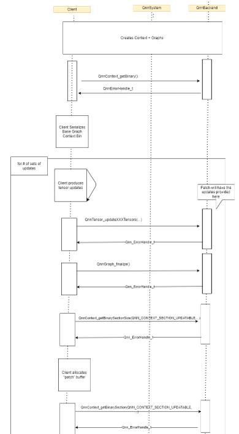

Offline Flow: Generating LoRA binary sections with QNN API¶
As shown on previous page,
qnn-context-binary-generatortool is extended to produce LoRA binary sections (also referred to as adapters)This page explains how do apply the adapter weights and retrieve the binary sections directly using QNN API (not via QNN tools)
This is done in the following manner:
Create the QNN Context & Graphs (either from-scratch or from a Binary)
In case the Context/Graph was created from scratch, call
QnnContext_getBinaryto receive a binary blob of the unmodified QNN context.
Call New QNN API :
QnnTensor_updateGraphTensors/QnnTensor_updateContextTensorsTensors must be of
UPDATEABLEtype, created during graph composition (in step 1.)
Call
QnnGraph_finalize(important! Updates are not applied until finalize is called)Call
QnnContext_getBinarySectionSizeto receive the size of the binary sectionA buffer with a suitable size should be allocated and passed to QNN backend as part of the next API call
Call
QnnContext_getBinarySectionto receive a binary blob containing the LoRA update
Steps 2-4 can be done multiple times, each time apply a different adapter (by updating the weights) and retrieve a suitable binary section